기계설계산업기사 (2018-03-04 기출문제)
1과목: 기계가공법 및 안전관리
1. W, Cr, V, Co 들의 원소를 함유하는 합금강으로 600°C까지 고온경도를 유지하는 공구 재료는?
- 고속도강
- 초경합금
- 탄소공구강
- 합금공구강
(정답률: 63%)

2. 기어절삭가공 방법에서 창성법에 해당하는 것은?
- 호브에 의한 기어가공
- 형판에 의한 기어가공
- 브로칭에 의한 기어가공
- 총형 바이트에 의한 기어가공
(정답률: 59%)
3. 밀링 절삭 방법 중 상향절삭과 하향절삭에 대한 설명이 틀린 것은?
- 하향절삭은 상향절삭에 비하여 공구수명이 길다.
- 상향절삭은 가공면의 표면거칠기가 하향절삭보다 나쁘다.
- 상향절삭은 절삭력이 상향으로 작용하여 가공물의 고정이 유리하다.
- 커터의 회전방향과 가공물의 이송이 같은 방향의 가공방법을 하향절삭이라 한다.
(정답률: 74%)
4. 테일러의 원리에 맞게 제작되지 않아도 되는 게이지는?
- 링 게이지
- 스냅 게이지
- 테이퍼 게이지
- 플러그 게이지
(정답률: 55%)
5. 터릿선반에 대한 설명으로 옳은 것은?
- 다수의 공구를 조합하여 동시에 순차적으로 작업이 가능한 선반이다.
- 지름이 큰 공작물을 정면가공하기 위하여 스윙을 크게 만든 선반이다.
- 작업대 위에 설치하고 시계부속 등 작고 정밀한 가공물을 가공하기 위한 선반이다.
- 가공하고자 하는 공작물과 같은 실물이나 모형을 따라 공구대가 자동으로 모형과 같은 윤곽을 깎아내는 선반이다.
(정답률: 59%)
6. 연삭기의 이송방법이 아닌 것은?
- 테이블 왕복식
- 플랜지 컷 방식
- 연삭 숫돌대 방식
- 마그네틱 척 이동 방식
(정답률: 62%)
7. 선반에서 긴 가공물을 절삭할 경우 사용하는 방진구 중 이동식 방진구는 어느 부분에 설치하는가?
- 베드
- 새들
- 심압대
- 주축대
(정답률: 59%)
8. 머시닝센터에서 드릴링 사이클에 사용되는 G-코드로만 짝지어진 것은?
- G24, G43
- G44, G65
- G54, G92
- G73, G83
(정답률: 58%)
9. 탭으로 암나사 가공작업 시 탭의 파손원인으로 적절하지 않은 것은?
- 탭이 경사지게 들어간 경우
- 탭 재질의 경도가 높은 경우
- 탭의 가공 속도가 빠른 경우
- 탭이 구멍바닥에 부딪쳤을 경우
(정답률: 76%)
10. 다음 연삭숫돌 기호에 대한 설명이 틀린 것은?
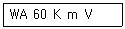
- WA : 연삭숫돌입자의 종류
- 60 : 입도
- m : 결합도
- V : 결합제
(정답률: 77%)
11. 래핑에 대한 설명으로 틀린 것은?
- 습식래핑은 주로 거친 래핑에 사용된다.
- 습식래핑은 연마입자를 혼합한 랩액을 공작물에 주입하면서 가공한다.
- 건식래핑의 사용 용도는 초경질 합금, 보석 및 유리 등 특수재료에 널리 쓰인다.
- 건식래핑은 랩제를 랩에 고르게 누른 다음 이를 충분히 닦아내고 주로 건조상태에서 래핑을 한다.
(정답률: 55%)
12. 측정자의 직선 또는 원호운동을 기계적으로 확대하여 그 움직임을 지침의 회전변위로 변환시켜 눈금으로 읽을 수 있는 측정기는?
- 수준기
- 스냅 게이지
- 게이지 블록
- 다이얼 게이지
(정답률: 73%)
13. 다음 중 금속의 구멍작업 시 칩의 배출이 용이하고 가공 정밀도가 가장 높은 드릴 날은?
- 평 드릴
- 센터 드릴
- 직선홈 드릴
- 트위스트 드릴
(정답률: 69%)
14. 밀링머신에서 사용하는 바이스 중 회전과 상하로 경사시킬 수 있는 기능이 있는 것은?
- 만능 바이스
- 수평 바이스
- 유압 바이스
- 회전 바이스
(정답률: 65%)
15. 연삭 작업에 관련된 안전사항 중 틀린 것은?
- 연삭숫돌을 정확하게 고정한다.
- 연삭숫돌 측면에 연삭을 하지 않는다.
- 연삭가공 시 원주 정면에 서 있지 않는다.
- 연삭숫돌 덮개 설치보다는 작업자의 보안경 착용을 권장한다.
(정답률: 80%)
16. 절삭공구 수명을 판정하는 방법으로 틀린 것은?(오류 신고가 접수된 문제입니다. 반드시 정답과 해설을 확인하시기 바랍니다.)
- 공구 인선의 마모가 일정량에 달했을 경우
- 완성가공된 치수의 변화가 일정량에 달했을 경우
- 절삭저항의 주 분력이 절삭을 시작했을 때와 비교하여 동일할 경우
- 완성 가공면 또는 절삭가공 한 직후에 가공 표면에 광택이 있는 색조 또는 반점이 생길 경우
(정답률: 71%)
17. 드릴의 속도가 V(m/min), 지름이 d(mm)일 때, 드릴의 회전수 n(rpm)을 구하는 식은?
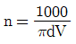
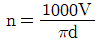
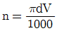
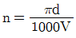
(정답률: 79%)
18. 절삭제의 사용 목적과 거리가 먼 것은?
- 공구수명 연장
- 절삭 저항의 증가
- 공구의 온도상승 방지
- 가공물의 정밀도 저하방지
(정답률: 81%)
19. 다음 중 각도를 측정할 수 있는 측정기는?
- 사인 바
- 마이크로미터
- 하이트 게이지
- 버니어캘리퍼스
(정답률: 85%)
20. 밀링가공에서 일반적인 절삭속도 선정에 관한 내용으로 틀린 것은?
- 거친 절삭에서는 절삭속도를 빠르게 한다.
- 다듬질 절삭에서는 이송속도를 느리게 한다.
- 커터의 날이 빠르게 마모되면, 절삭 속도를 낮춘다.
- 적정 절삭속도보다 약간 낮게 설정하는 것이 커터의 수명연장에 좋다.
(정답률: 56%)
2과목: 기계제도
21. 기준치수가 ø50인 구멍기준식 끼워 맞춤에서 구멍과 축의 공차 값이 다음과 같을 때 옳지 않은 것은?
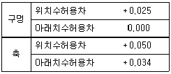
- 최소 틈새는 0.009이다.
- 최대 죔새는 0.⑤0이다.
- 축의 최소 허용치수는 50.034이다.
- 구멍과 축의 조립 상태는 억지 끼워 맞춤이다.
(정답률: 70%)
22. 호칭지름이 3/8인치이고, 1인치 사이에 나사산이 16개인 유니파이 보통나사의 표시로 옳은 것은?
- UNF 3/8 - 16
- 3/8 - 16 UNF
- UNC 3/8 - 16
- 3/8 - 16 UNC
(정답률: 52%)
23. 도면 재질란에 “SPCC"로 표시된 재료기호의 명칭으로 옳은 것은?
- 기계구조용 탄소 강관
- 냉간압연 강관 및 강대
- 일반구조용 탄소 강관
- 열간압연 강관 및 강대
(정답률: 59%)
24. 그림에서 오른쪽에 구멍을 나타낸 것과 같이 측면도의 일부분만을 그리는 투상도의 명칭은?
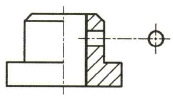
- 보조 투상도
- 부분 투상도
- 국부 투상도
- 회전 투상도
(정답률: 56%)
25. 다음 도면과 같은 데이텀 표적 도시기호의 의미 설명으로 올바른 것은?
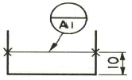
- 점의 데이텀 표적
- 선의 데이텀 표적
- 면의 데이텀 표적
- 구형의 데이텀 표적
(정답률: 71%)
26. 현대 사회는 산업 구조의 거대화로 대량 생산 체제가 이루어지고 있다. 이런 대량 생산화의 추세에서 기계 제도와 관련된 표준 규격의 방향으로 옳은 것은?
- 이익 집단 중심의 단체 규격화
- 민족 중심의 보수 규격화
- 대기업 중심의 사내 규격화
- 국제 교류를 위한 통용된 규격화
(정답률: 83%)
27. 가공으로 생신 커터의 줄무늬 방향이 기호를 기입한 그림의 투영면에 비스듬하게 2방향으로 교차하는 것을 의미하는 기호는?
- ⊥
- ×
- C
- =
(정답률: 82%)
28. 그림과 같이 제 3각 정투상도로 나타낸 정면도와 우측면도에 가장 적합한 평면도는? (문제 오류로 실제 시험에서는 1, 3번이 정답처리 되었습니다. 여기서는 1번을 누르면 정답 처리 됩니다.)
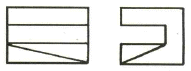
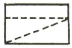
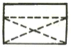
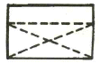
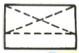
(정답률: 79%)
29. 그림과 같은 도면에서 참고 치수를 나타내는 것은?
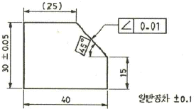
- (25)
- ∠ 0.01
- 45°
- 일반공차 ±0.1
(정답률: 84%)
30. 다음 투상도 중 KS 제도 표준에 따라 가장 올바르게 작도된 투상도는?
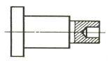
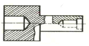
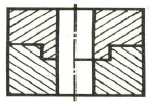
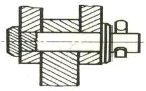
(정답률: 72%)
31. 그림과 같은 도면에서 구멍 지름을 측정한 결과 10.1 일 때 평행도 공차의 최대 허용치는?
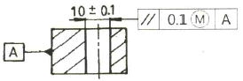
- 0
- 0.1
- 0.2
- 0.3
(정답률: 42%)
32. 치수 기입에 있어서 누진 치수 기입 방법으로 올바르게 나타낸 것은?
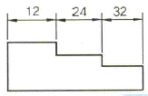
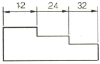
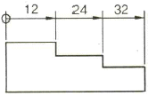
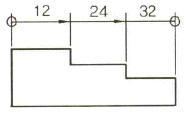
(정답률: 70%)
33. 그림과 같은 도면에서 ‘L' 치수는 몇 mm인가?
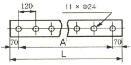
- 1200
- 1320
- 1340
- 1460
(정답률: 74%)
34. 기어 제도에서 선의 사용법으로 틀린 것은?
- 피치원은 가는 1점 쇄선으로 표시한다.
- 축에 직각인 방향에서 본 그림을 단면도로 도시할 때는 이골(이뿌리)의 선은 굵은 실선으로 표시한다.
- 잇봉우리원은 굵은 실선으로 표시한다.
- 내접 헬리컬 기어의 잇줄 방향은 2개의 가는 실선으로 표시한다.
(정답률: 61%)
35. 그림과 같은 등각투상도에서 화살표 방향이 정면일 경우 3각법으로 투상한 평면도로 가장 적합한 것은?
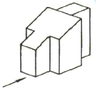
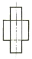
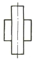
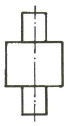
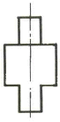
(정답률: 82%)
36. 기계제도에서 특수한 가공을 하는 부분(범위)을 나타내고자 할 때 사용하는 선은?
- 굵은 실선
- 가는 1점 쇄선
- 가는 실선
- 굵은 1점 쇄선
(정답률: 59%)
37. 다음 중 구멍 기준식 억지 끼워맞춤을 올바르게 표시한 것은?
- ø50 X7/h6
- ø50 H7/h6
- ø50 H7/s6
- ø50 F7/h6
(정답률: 60%)
38. 구름베어링의 안지름 번호에 대하여 베어링의 안지름 치수를 잘못 나타낸 것은?
- 안지름번호 : 01 - 안지름 : 12mm
- 안지름번호 : 02 - 안지름 : 15mm
- 안지름번호 : 03 - 안지름 : 18mm
- 안지름번호 : 04 - 안지름 : 20mm
(정답률: 78%)
39. 그림과 같이 용접기호가 도시되었을 경우 그 의미로 옳은 것은?
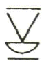
- 양면 V형 맞대기 용접으로 표면 모두 평면 마감 처리
- 이면 용접이 있으며 표면 모두 평면 마감 처리한 V형 맞대기 용접
- 토우를 매끄럽게 처리한 V형 용접으로 제거 가능한 이면 판재 사용
- 넓은 루트면이 있고 이면 용접된 필릿 용접이며 윗면을 평면 처리
(정답률: 61%)
40. 빗줄 널링(knurling)의 표시 방법으로 가장 올바른 것은?
- 축선에 대하여 일정한 간격으로 평행하게 도시한다.
- 축선에 대하여 일정한 간격으로 수직으로 도시한다.
- 축선에 대하여 30°로 엇갈리게 일정한 간격으로 도시한다.
- 축선에 대하여 80°가 되도록 일정한 간격으로 평행하게 도시한다.
(정답률: 74%)
3과목: 기계설계 및 기계재료
41. 뜨임 취성(Temper brittleness)을 방지하는데 가장 효과적인 원소는?
- Mo
- Ni
- Cr
- Zr
(정답률: 69%)
42. 95%Cu-5%Zn 합금으로 연하고 코이닝(coining)하기 쉬우므로 동전, 메달 등에 사용되는 황동의 종류는?
- Naval brass
- Cartridge brass
- Muntz metal
- Gilding metal
(정답률: 59%)
43. Kelmet의 주요 합금조성으로 옳은 것은?
- Cu-Pb계 합금
- Zn-Pb계 합금
- Cr-Pb계 합금
- Mo-Pb계 합금
(정답률: 56%)
44. Fe-C 평행상태도에서 나타나지 않는 반응은?
- 공정반응
- 편정반응
- 포정반응
- 공석반응
(정답률: 64%)
45. 쾌삭강에서 피삭성을 좋게 만들기 위해 첨가하는 원소로 가장 적합한 것은?
- Mn
- Si
- C
- S
(정답률: 45%)
46. 반도체 재료에 사용되는 주요 성분 원소는?
- Co, Ni
- Ge, Si
- W, Pb
- Fe, Cu
(정답률: 56%)
47. 다음 중 블랭킹 및 피어싱 펀치로 사용되는 금형재료가 아닌 것은?
- STD11
- STS3
- STC3
- SM15C
(정답률: 61%)
48. 주조 시 주형에 냉금을 삽입하여 주물 표면을 급냉시킴으로써 백선화하고, 경도를 증가시킨 내마모성 주철은?
- 구상흑연주철
- 가단(malleable)주철
- 칠드(chilled)주철
- 미해나이트(meehanite)주철
(정답률: 52%)
49. 불변강의 종류가 아닌 것은?
- 인바
- 엘린바
- 코엘린바
- 스프링강
(정답률: 70%)
50. 성형수축이 적고, 성형 가공성이 양호한 열가소성 수지는?
- 페놀 수지
- 멜라민 수지
- 에폭시 수지
- 폴리스티렌 수지
(정답률: 49%)
51. 4kN·m의 비틀림 모멘트를 받는 전동축의 지름은 약 몇 mm인가? (단, 축에 작용하는 전단응력은 60MPa이다.)
- 70
- 80
- 90
- 100
(정답률: 25%)
52. 양쪽 기울기를 가진 코터에서 저절로 빠지지 않기 위한 자립조건으로 옳은 것은? (단, α는 코터 중심에 대한 기울기 각도이고, ρ는 코터와 로드엔드와의 접촉부 마찰계수에 대응하는 마찰각이다.)
- α ≦ ρ
- α ≧ ρ
- α ≦ 2ρ
- α ≧ 2ρ
(정답률: 51%)
53. 용접 가공에 대한 일반적인 특징 설명으로 틀린 것은?
- 공정수를 줄일 수 있어서 제작비가 저렴하다.
- 기밀 및 수밀성이 양호하다.
- 열 영향에 의한 재료의 변질이 거의 없다.
- 잔류응력이 발생하기 쉽다.
(정답률: 68%)
54. 그림과 같은 스프링장치에서 각 스프링 상수k1=40N/cm, k2=50N/cm, k3=60N/cm이다. 하중 방향의 처짐이 150mm일 때 작용하는 하중 P는 약 몇 N인가?
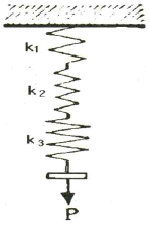
- 2250
- 964
- 389
- 243
(정답률: 30%)
55. 작용하중의 방향에 따른 베어링 분류 중에서 축선에 직각으로 작용하는 하중과 축선 방향으로 작용하는 하중이 동시에 작용하는데 사용하는 베어링은?
- 레이디얼 베어링(radial bearing)
- 스러스트 베어링(thrust bearing)
- 테이퍼 베어링(taper bearing)
- 칼라 베어링(collar bearing)
(정답률: 36%)
56. 회전속도가 8m/s로 전동되는 평벨트 전동장치에서 가죽 벨트의 폭(b)×두께(t)=116mm×8mm인 경우, 최대전달동력은 약 몇 kW인가? (단, 벨트의 허용인장응력은 2.35MPa, 장력비(θ)는 2.5이며, 원심력은 무시하고 벨트의 이음효율은 100%이다.)
- 7.45
- 10.47
- 12.08
- 14.46
(정답률: 38%)
57. 그림과 같은 블록 브레이크에서 막대 끝에 작용하는 조작력 F와 브레이크의 제동력 Q와의 관계식은? (단, 드럼은 반시계방향 회전을 하고 마찰계수는 μ이다.)
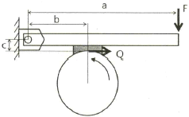
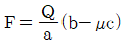
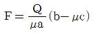
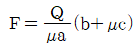
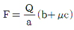
(정답률: 49%)
58. 안지름 300mm, 내압 100N/cm2이 작용하고 있는 실린더 커버를 12개의 볼트로 체결하려고 한다. 볼트 1개에 작용하는 하중 W은 약 몇 N인가?
- 3257
- 5890
- 8976
- 11245
(정답률: 40%)
59. 응력-변형률 선도에서 재료가 저항할 수 있는 최대의 응력을 무엇이라 하는가? (단, 공칭응력을 기준으로 한다.)
- 비례한도(proportional limit)
- 탄성한도(elastic limit)
- 항복점(yield point)
- 극한강도(ultimate strength)
(정답률: 62%)
60. 다음 중 기어에서 이의 크기를 나타내는 방법이 아닌 것은?
- 피치원지름
- 원주피치
- 모듈
- 지름피치
(정답률: 40%)
4과목: 컴퓨터응용설계
61. 다음 중 OLED(유기발광다이오드) 디스플레이의 일반적인 장점으로 옳지 않은 것은?
- LCD와 달리 자체 발광이라 백라이트가 필요 없다.
- CRT와 달리 발광 소자의 수명이 길어서 번인(burn-in) 현상과 같은 단점이 없다.
- 박막화가 가능하고 무게를 가볍게 설계할 수 있다.
- TFT-LCD보다도 시야각이 넓어서 어느 방향에서나 동일한 화질을 볼 수 있다.
(정답률: 55%)
62. IGES 파일 구조가 가지는 5가지 section이 아닌 것은?
- directory entry section
- global section
- start section
- local section
(정답률: 57%)
63. 그림과 같이 x2+y2-2=0인 원이 있다. 원 위의 점 P(1,1)에서 접선의 방정식으로 옳은 것은?
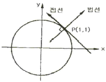
- 2(x-1)+2(y-1)=0
- (x-1)-(y-1)=0
- 2(x+1)+2(y-1)=0
- (x+1)+(y+1)=0
(정답률: 44%)
64. 제시된 단면곡선을 안내곡선에 따라 이동하면서 생기는 궤적을 나타낸 곡면은?
- 룰드(ruled) 곡면
- 스윕(sweep) 곡면
- 보간 곡면
- 블랜딩(blending) 곡면
(정답률: 73%)
65. 솔리드 모델링에서 모델링 결과 알 수 있는 물리적 성질(property)이 아닌 것은?
- 부피
- 표면적
- 비틀림 모멘트
- 부피중심
(정답률: 67%)
66. 와이어프레임 모델의 특징을 잘못 설명한 것은?
- 데이터의 구성이 간단하다.
- 처리속도가 빠르다.
- 물리적 성질의 계산이 불가능하다.
- 은선 제거가 가능하다.
(정답률: 71%)
67. 컴퓨터 그래픽스에서 3D형상정보를 화면상에 표현하기 위해서는 필요한 부분의 3D좌표가 2D좌표정보로 변환되어야 한다. 이와 같이 3D형상에 대한 좌표정보를 2D평면좌표로 변환해 주는 것을 무엇이라 하는가?
- 점 변환
- 축척 변환
- 투영 변환
- 동차 변환
(정답률: 62%)
68. 다음 중 프린터의 해상도를 나타내는 단위인 “DPI”의 원어은?
- digit per increment
- digit per inch
- dot per increment
- dot per inch
(정답률: 60%)
69. 2차원 평면에서 y=3x+4인 직선에 직교하면서 점(3, 1)인 지점을 지나는 직선의 방정식은?
- y=-(1/3)x+2
- y=3x+10
- y=3x-8
- y=-(1/3)x+1
(정답률: 38%)
70. 컴퓨터를 이용한 형상 모델링에 대한 일반적인 설명 중 틀린 것은?
- 형상 모델링(geometric modeling)은 물체의 모양을 완전히 수학적으로 표현하는 과정이라고 할 수 있다.
- 컴퓨터 그래픽스(computer graphics)는 시각적 디스플레이를 통하여 부품의 설계나 복잡한 형상을 표현하는데 이용될 수 있다.
- 3차원 모델링 및 설계는 현실감 있는 3차원 모델링과 시뮬레이션을 가능하게 하지만, 물리적 모델(목업 등)에 비해 비용이 많이 소요되는 단점이 있다.
- 구조물의 응력해석, 열전달, 변형 및 다른 특성들도 시각적 기법들로 잘 표현될 수 있다.
(정답률: 67%)
71. 주어진 물체를 윈도우에 디스플레이할 때 윈도우 내에 포함되는 부분만을 추출하기 위하여 사용되는 2차원 절단 코헨-서더랜드 알고리즘은 윈도우를 포함한 2차원 평면을 9개의 영역으로 구분하여 각 영역을 비트 스트링(bit string)으로 표현한다. 모든 영역을 최소 비트 수로 표현하기 위하여 이 알고리즘에서 사용되는 코드의 길이는?
- 3-비트
- 4-비트
- 5-비트
- 6-비트
(정답률: 56%)
72. CAD 모델링 방법 중 형상 구속 조건과 치수 조건을 이용하여 형태를 모델링하는 방식은?
- Feature-based modeling
- Parametric modeling
- Hybrid modeling
- Non-manifold modeling
(정답률: 67%)
73. 다음 중 베지어 곡면의 특징이 아닌 것은?
- 곡면을 부분적으로 수정할 수 있다.
- 곡면의 코너와 코너 조정점이 일치한다.
- 곡면이 조정점들의 볼록포(convex hull) 내부에 포함된다.
- 곡면이 일반적인 조정점의 형상에 따른다.
(정답률: 54%)
74. 다음 모델링 기법 중 컴퓨터를 이용한 자동공정계획(CAPP)에 가장 적합한 모델링 기법은?
- 특징형상 모델링
- 경계 모델링
- 와이어 프레임 모델링
- 조립 모델링
(정답률: 56%)
75. 솔리드모델링 방법 중 CSG 방식과 비교할 때 B-rep 방식의 특징에 해당하는 것은?
- 메모리 용량이 적다.
- 파라메트릭 모델링을 쉽게 구현할 수 있다.
- 3면도, 투시도, 전개도의 작성이 용이하다.
- 자료 구조가 단순하다.
(정답률: 61%)
76. 다음 중 반지름이 3이고, 중심점이 (1,2)인 원의 방정식은?
- (x-1)2+(y-2)2=3
- (x-3)2+(y-1)2=2
- x2-2x+y2-4y+4=0
- x2-2x+y2-4y-4=0
(정답률: 28%)
77. 일반적인 CAD 소프트웨어의 기본적인 기능으로 볼 수 없는 것은?
- 문자나 데이터의 편집 기능
- 디스플레이 제어기능
- 도면 작성 기능
- 가공정보 제어기능
(정답률: 58%)
78. 일반적인 B-Spline 곡선의 특징을 설명한 것으로 틀린 것은?
- 곡선의 차수는 조정점의 개수와 무관하다.
- 곡선의 형상을 국부적으로 수정할 수 있다.
- 원, 타원, 포물선과 같은 원추곡선을 정확하게 표현할 수 있다.
- 조정점의 수가 오더(k)와 같은 비주기적 균일 B-Spline 곡선은 베지어 곡선과 같다.
(정답률: 36%)
79. 2차원 평면에서 원(circle)을 정의하고자 할 때 필요한 조건으로 틀린 것은?
- 중심점과 원주상의 한 점으로 정의
- 원주상의 3개의 점으로 정의
- 두 개의 접선으로 정의
- 중심점과 하나의 접선으로 정의
(정답률: 62%)
80. 누산기(accumulator)에 대하여 올바르게 설명한 것은?
- 레지스터의 일정으로 산술연산 혹은 논리연산의 결과를 일시적으로 기억하는 장치이다.
- 연산명령이 주어지면 연산준비를 하는 장소이다.
- 연산명령의 순서를 기억하는 장소이다.
- 연산부호를 해독하는 장치이다.
(정답률: 55%)